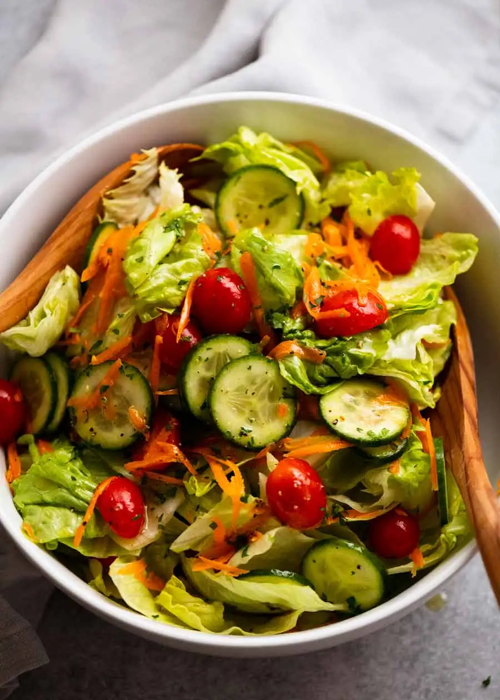

Garden Salad

Description
Simple delicious salad that pairs well with pasta dishes. Can use store bought dressing, or can make your own!
This salad can be made as is, or you can make it your own by adding extra ingredients such as cheese, onions, croutons, peppers, or anything else you like.
Ingredients
- Cucumbers
- Carrots
- Iceberg lettuce
- Cherry tomatoes
- Vinegar
- Dijon mustard
- Olive oil
- Parsley
- Salt & Pepper
Steps
- Chop up the vegetables and place into a large bowl.
- Mix together the vinegar, dijon mustard, and olive oil.
- Add the parsley and salt & pepper into the dressing.
- Give the dressing a shake to mix all the ingredients together.
- Pour the desired amount of dressing over the salad.
- Serve!